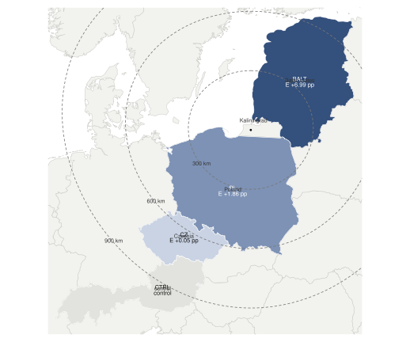
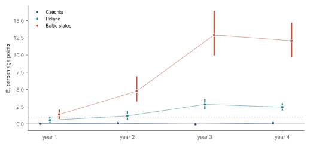
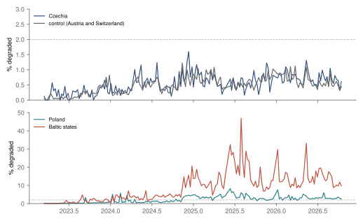
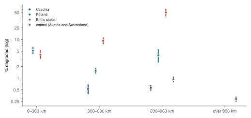
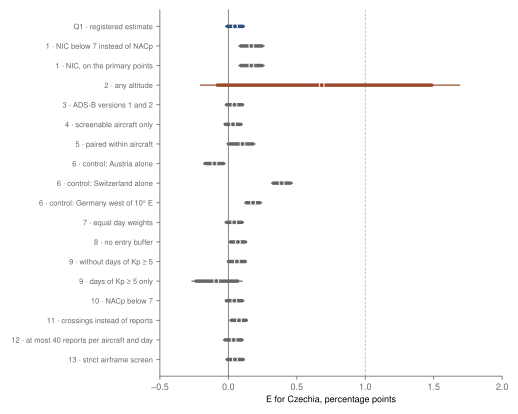

Research · aviation · GNSS position quality broadcast by aircraft, 2023–2026
Degraded GNSS positions over Czechia
Over Czechia, aircraft at cruise broadcast degraded GNSS positions about as often as over Austria and Switzerland (+0.05 pp, no excess larger than one point); over Poland and the Baltic states, more often.
- Czechia minus control (Q1)
- +0.05 pp share of degraded position reports · 95 % −0.02 to +0.12 pp · no excess larger than one point · registered
- Poland minus control (Q2)
- +1.9 pp 95 % +1.6 to +2.2 pp · higher degraded share than control · descriptive
- Baltic states minus control (Q2)
- +7.0 pp 95 % +5.8 to +8.5 pp · higher degraded share than control · descriptive
- Czechia, 2024 to 2026 (Q3)
- +0.03 pp change, March–October windows · 95 % −0.15 to +0.20 pp · no increase larger than one point · registered
Overwhelmed? Here's the short version
- On none of 183 sampled days in three and a half years did aircraft over Czechia meet the rule for a degraded-position day. Poland had 76 such days and the Baltic states 139, and in the Baltic states about one position report in seven or eight was degraded in the last two study years. Position jumps, a possible sign of spoofing, were rare over Czechia (0.05 % of crossings) but about three times as common as over the control.
- The regions nearer Kaliningrad have the higher shares, Czechia the lowest, Poland more and the Baltic states the most. Within Poland and the Baltic states, though, the share does not fall with distance: high shares lie both close to Kaliningrad and far from it, at Poland's southern fringe and along the north of Estonia.
- Every registered check gives the same label for Czechia except one: with aircraft at every altitude counted, not only at cruise, the comparison is inconclusive.
- The data see only aircraft at cruise with current transponders that still broadcast a position. They cannot see the ground, low-flying aircraft or short episodes, so they do not contradict the Czech authorities' reports; and a degraded position is what an aircraft says about its own accuracy, not proof of jamming or of who caused it.
Since 2022, European aviation authorities have warned that satellite navigation signals are jammed or spoofed around the Baltic Sea, the Black Sea and the eastern Mediterranean5, and in May 2026 the Czech Civil Aviation Authority said the interference had been spreading into Central Europe6. This study asked whether aircraft flying over Czechia broadcast degraded positions more often than aircraft over Austria and Switzerland, a control region farther than Czechia from the Baltic Sea and Kaliningrad. It reads what the aircraft themselves transmit. With each position, an ADS-B transponder sends a navigation accuracy category, NACp; a value below 8 means that the aircraft's own estimate of its position uncertainty was 0.05 nautical miles, about 93 m, or worse7. Public maps such as GPSJAM are built on the same kind of report8. The questions, the sample of days and the rules for reading each result were fixed under a signed tag before any position quality was summarised.
Over Czechia, 0.56 % of the position reports of aircraft at cruise were degraded, against 0.51 % over the control, a difference of +0.05 pp (95 % interval −0.02 to +0.12 pp). The registered label is no excess larger than one point: the 90 % interval, −0.01 to +0.11 pp, lies below one degraded report in a hundred. On no sampled day in the four study years did Czechia meet the registered rule for a degraded-position day, a day share of at least 2 % and at least 2 points above control's; in the per-day shares counted after the results (fig. 3), its highest day, 11 December 2024, reached 1.6 %. Farther north-east the shares were higher: 2.4 % over Poland and 7.5 % over Estonia, Latvia and Lithuania, or +1.9 pp and +7.0 pp above control, both labelled higher degraded share than control (fig. 1).

tools/gnss/map.py). Base: Natural Earth3; data: adsb.lol1.Poland, the Baltic states and distance from Kaliningrad
The regions order by nearness to Kaliningrad, Czechia lowest, then Poland, then the Baltic states, and the excess grew until the third study year and then held. Over the Baltic states it was +1.4 pp in the first study year (March 2023 to February 2024), labelled inconclusive, then +4.8 pp in the second and +12.9 pp and +12.1 pp in the third and fourth. Over Poland it went from +0.5 pp to +1.2 pp, +2.8 pp and +2.5 pp. Over Czechia it stayed between −0.04 pp and +0.11 pp, labelled no excess larger than one point in every year (fig. 2). The degraded-position days follow the same course: in Poland 3, 17, 31 and 25 by study year, and in the Baltic states 13, 46, then every eligible sampled day of the third and fourth years (48 and 32). Fig. 3, drawn after the results and descriptive, shows the share day by day.
Over Czechia the excess stayed near zero in every year; over the Baltic states it rose to about 12 to 13 points in years 3 and 4.

Described after the results: over Czechia and the control the share stayed under 2 % on every sampled day, while over the Baltic states it was typically about 12 % from 2025, with a peak of 47 %.

tools/gnss/describe.py). Data: adsb.lol1.By distance from Kaliningrad city, the share over the points of all four regions, minus control's pooled share, was +4.3 pp within 300 km, +1.8 pp at 300–600 km, +0.3 pp at 600–900 km and −0.2 pp beyond. These bands are not a comparison of regions: control's own points lie in the two outer bands, and Czechia straddles the 600 km edge, so a band partly stands in for a region. Each region's share per band says more (fig. 4). Czechia had 0.53 % in its nearer band and 0.56 % in its farther one; in the one band both reach, 600–900 km, Czechia's share was below control's 0.93 %, and neither region reached 1 % in any band. In Poland the share was 5.2 % within 300 km and 1.5 % at 300–600 km, but 3.9 % again at 600–900 km, the southernmost fringe of the country around the Tatras and the Bieszczady; the intervals of the first and last overlap. In the Baltic states the highest share, 50.3 %, lay in their farthest band, the north of Estonia along the Gulf of Finland with its band of sea, against 4.1 % and 9.3 % nearer Kaliningrad. Distance from Kaliningrad alone does not order the shares, and the bands show where aircraft broadcast degraded positions, not where any cause was.
Within Poland and the Baltic states the share does not fall with distance from Kaliningrad; over Czechia and the control it stays under 1 % in every band.

The design also placed Czechia on the line from control to the Baltic states: G, Czechia's excess divided by the Baltic states', was 0.007 pooled (95 % −0.003 to 0.017), that is about 0.7 % of the way. By the registered rule, G is computed only for a period in which the Baltic excess is labelled higher than control. In the first study year it was inconclusive, so G was not computed; instead, Czechia's excess minus the Baltic states' was −1.34 pp (95 % −1.96 to −0.78 pp) and Poland's minus the Baltic states' −0.84 pp.
The official statements and what the data can see
Two Czech statements were registered as claims to check. In September 2024 the air navigation service ŘLP said it had “units of cases” of aircraft at higher flight levels occasionally reporting a problem with their GNSS receivers, which it could not firmly attribute to outside interference9. In study year 2, March 2024 to February 2025, Czechia's excess was +0.09 pp, labelled no excess larger than one point, with no degraded-position day. That does not contradict the statement: a handful of crew reports, or a few aircraft for a few minutes, would not move a share counted over about 1.2 million reports in that year (counted after the results).
In May 2026 the Civil Aviation Authority ÚCL said that interference had risen markedly since February 2022 and was gradually spreading into Central Europe6. The registered test compares Czechia's excess in the same window of two years, 1 March to 14 October, with 32 sampled days in 2024 and 32 in 2026. It went from +0.08 pp to +0.11 pp, a change of +0.03 pp (95 % −0.15 to +0.20 pp), labelled no increase larger than one point. The data start in March 2023, so the part of the statement about the years since 2022 is not tested.
Several things lie outside what the data can see. Nothing here measures what happens on the ground, to cars, phones, ships or drones. Aircraft below 25 000 ft, including every approach and departure, are left out, as are transponders older than ADS-B version 2 (2.0 % of reports at cruise in the first year) and aircraft that broadcast no ADS-B at all. An aircraft that loses its position altogether stops broadcasting one and leaves no degraded report, so the shares understate how many aircraft lost or degraded their position. Short episodes can fall between the sampled Wednesdays. The statements and the data are therefore not at odds: the data rule out an excess of one degraded report in a hundred at cruise over Czechia, not interference at ground level, at low altitude or on single days.
Position jumps
Spoofing can feed a receiver a false position that it reports as accurate, which a degraded NACp would miss. The design therefore also counted crossings of a region with a position jump: two consecutive reports of one aircraft at most 60 seconds apart whose distance implies more than 1 200 knots and at least 2 nautical miles. Over Czechia 0.05 % of crossings had a jump, about one in two thousand, against 0.02 % over the control; the difference, +0.03 pp (95 % +0.015 to +0.046 pp), lies above zero. Over Poland the share was 0.45 % and over the Baltic states 0.40 %, about nine times Czechia's. Over Czechia the share was highest in study year 2, at 0.08 %. These are descriptive, with no registered label. A jump need not be spoofing, and readsb, the software that writes the archives, drops some implausible positions before they are stored2, so the shares are a lower bound.
How far to trust it
Of the 17 registered check estimates, each repeating the analysis with one thing changed, 16 give Czechia the same label as the headline (fig. 5). Judging degradation by the integrity category NIC instead of NACp gives +0.17 pp; Austria alone as control gives −0.10 pp, Switzerland alone +0.39 pp and western Germany +0.18 pp; weighting every day equally, dropping the entry buffer, leaving out the 18 days of geomagnetic storm or counting crossings instead of reports all stay within a point. The one exception is the check without the 25 000 ft floor: counted at every altitude, Czechia's excess is +0.68 pp (95 % −0.20 to +1.69 pp), labelled inconclusive, and so is Poland's (+0.72 pp). That check adds climbing, descending and low-flying aircraft, whose position quality can be poor for other reasons, and its interval reaches past one point. The design does not let a check change a label, and where the two differ both are reported without choosing between them. The same holds for Q3: every check gives no increase larger than one point except, again, the check at every altitude.
All registered checks, with fig. 5 and the tables
Every check keeps Czechia's excess below one point except the check at every altitude, which is inconclusive.

| Check (design §7) | Czechia | Poland | Baltic states |
|---|---|---|---|
| 1 · NIC below 7 instead of NACp | +0.17 pp95 % +0.08 to +0.26 pp no excess larger than one point | +3.52 pp95 % +3.02 to +4.12 pp higher degraded share than control | +12.28 pp95 % +10.64 to +14.27 pp higher degraded share than control |
| 1 · NIC, on the primary points | +0.17 pp95 % +0.08 to +0.26 pp no excess larger than one point | +3.52 pp95 % +3.01 to +4.12 pp higher degraded share than control | +12.28 pp95 % +10.64 to +14.28 pp higher degraded share than control |
| 2 · any altitude | +0.68 pp95 % −0.20 to +1.69 pp inconclusive ≠ | +0.72 pp95 % +0.09 to +1.43 pp inconclusive ≠ | +2.40 pp95 % +1.53 to +3.45 pp higher degraded share than control |
| 3 · ADS-B versions 1 and 2 | +0.04 pp95 % −0.02 to +0.11 pp no excess larger than one point | +1.85 pp95 % +1.55 to +2.21 pp higher degraded share than control | +6.98 pp95 % +5.81 to +8.50 pp higher degraded share than control |
| 4 · screenable aircraft only | +0.03 pp95 % −0.03 to +0.10 pp no excess larger than one point | +1.67 pp95 % +1.38 to +2.00 pp higher degraded share than control | +7.00 pp95 % +5.76 to +8.56 pp higher degraded share than control |
| 5 · paired within aircraft | +0.10 pp95 % −0.01 to +0.19 pp no excess larger than one point | +1.47 pp95 % +1.24 to +1.74 pp higher degraded share than control | +5.05 pp95 % +4.53 to +5.96 pp higher degraded share than control |
| 6 · control: Austria alone | −0.10 pp95 % −0.18 to −0.03 pp no excess larger than one point | +1.71 pp95 % +1.40 to +2.07 pp higher degraded share than control | +6.84 pp95 % +5.66 to +8.37 pp higher degraded share than control |
| 6 · control: Switzerland alone | +0.39 pp95 % +0.32 to +0.47 pp no excess larger than one point | +2.20 pp95 % +1.90 to +2.56 pp higher degraded share than control | +7.33 pp95 % +6.16 to +8.85 pp higher degraded share than control |
| 6 · control: Germany west of 10° E | +0.18 pp95 % +0.12 to +0.24 pp no excess larger than one point | +1.99 pp95 % +1.69 to +2.34 pp higher degraded share than control | +7.12 pp95 % +5.96 to +8.64 pp higher degraded share than control |
| 7 · equal day weights | +0.04 pp95 % −0.02 to +0.11 pp no excess larger than one point | +1.70 pp95 % +1.40 to +2.04 pp higher degraded share than control | +8.14 pp95 % +6.68 to +9.82 pp higher degraded share than control |
| 8 · no entry buffer | +0.07 pp95 % +0.01 to +0.14 pp no excess larger than one point | +1.90 pp95 % +1.60 to +2.25 pp higher degraded share than control | +7.33 pp95 % +6.16 to +8.85 pp higher degraded share than control |
| 9 · without days of Kp ≥ 5 | +0.06 pp95 % −0.01 to +0.13 pp no excess larger than one point | +1.83 pp95 % +1.52 to +2.19 pp higher degraded share than control | +6.86 pp95 % +5.65 to +8.37 pp higher degraded share than control |
| 9 · days of Kp ≥ 5 only | −0.09 pp95 % −0.26 to +0.10 pp no excess larger than one point | +2.12 pp95 % +1.42 to +3.18 pp higher degraded share than control | +8.29 pp95 % +5.85 to +11.64 pp higher degraded share than control |
| 10 · NACp below 7 | +0.04 pp95 % −0.02 to +0.11 pp no excess larger than one point | +1.36 pp95 % +1.12 to +1.64 pp higher degraded share than control | +5.96 pp95 % +4.89 to +7.33 pp higher degraded share than control |
| 11 · crossings instead of reports | +0.08 pp95 % +0.01 to +0.14 pp no excess larger than one point | +5.76 pp95 % +4.88 to +6.78 pp higher degraded share than control | +12.21 pp95 % +10.68 to +13.99 pp higher degraded share than control |
| 12 · at most 40 reports per aircraft and day | +0.04 pp95 % −0.04 to +0.11 pp no excess larger than one point | +2.15 pp95 % +1.81 to +2.54 pp higher degraded share than control | +7.80 pp95 % +6.57 to +9.34 pp higher degraded share than control |
| 13 · strict airframe screen | +0.05 pp95 % −0.02 to +0.12 pp no excess larger than one point | +1.86 pp95 % +1.55 to +2.23 pp higher degraded share than control | +6.99 pp95 % +5.76 to +8.40 pp higher degraded share than control |
E minus control in percentage points, with the 95 % interval and the label by the registered rule; ≠ marks a label that differs from the primary estimate's. Checks are reported and do not relabel a result (design §7). The check on storm days rests on 18 days.
| Q3 and its checks | E_CZ, 2024 window | E_CZ, 2026 window | Change | Label |
|---|---|---|---|---|
| registered Q3, paired aircraft draw | +0.08 pp | +0.11 pp | +0.03 pp95 % −0.15 to +0.20 pp | no increase larger than one point |
| 1 · NIC below 7 instead of NACp | +0.37 pp | +0.21 pp | −0.16 pp95 % −0.46 to +0.11 pp | no increase larger than one point |
| 1 · NIC, on the primary points | +0.37 pp | +0.21 pp | −0.16 pp95 % −0.46 to +0.12 pp | no increase larger than one point |
| 2 · any altitude | +0.75 pp | +0.58 pp | −0.17 pp95 % −1.79 to +1.47 pp | inconclusive ≠ |
| 3 · ADS-B versions 1 and 2 | +0.08 pp | +0.11 pp | +0.03 pp95 % −0.15 to +0.20 pp | no increase larger than one point |
| 4 · screenable aircraft only | +0.09 pp | +0.07 pp | −0.02 pp95 % −0.19 to +0.15 pp | no increase larger than one point |
| 5 · paired within aircraft | +0.15 pp | −0.06 pp | −0.21 pp95 % −0.53 to +0.07 pp | no increase larger than one point |
| 6 · control: Austria alone | −0.05 pp | −0.04 pp | +0.01 pp95 % −0.18 to +0.20 pp | no increase larger than one point |
| 6 · control: Switzerland alone | +0.36 pp | +0.47 pp | +0.10 pp95 % −0.12 to +0.32 pp | no increase larger than one point |
| 6 · control: Germany west of 10° E | +0.25 pp | +0.20 pp | −0.05 pp95 % −0.21 to +0.11 pp | no increase larger than one point |
| 7 · equal day weights | +0.09 pp | +0.10 pp | +0.02 pp95 % −0.16 to +0.19 pp | no increase larger than one point |
| 8 · no entry buffer | +0.09 pp | +0.13 pp | +0.04 pp95 % −0.13 to +0.20 pp | no increase larger than one point |
| 9 · without days of Kp ≥ 5 | +0.09 pp | +0.12 pp | +0.03 pp95 % −0.15 to +0.20 pp | no increase larger than one point |
| 9 · days of Kp ≥ 5 only | −0.12 pp | −0.27 pp | −0.15 pp95 % −0.89 to +0.62 pp · 1 101 draws missing | no increase larger than one point |
| 10 · NACp below 7 | +0.08 pp | +0.11 pp | +0.04 pp95 % −0.14 to +0.20 pp | no increase larger than one point |
| 11 · crossings instead of reports | +0.08 pp | +0.13 pp | +0.05 pp95 % −0.14 to +0.23 pp | no increase larger than one point |
| 12 · at most 40 reports per aircraft and day | +0.09 pp | +0.11 pp | +0.01 pp95 % −0.18 to +0.20 pp | no increase larger than one point |
| 13 · strict airframe screen | +0.08 pp | +0.11 pp | +0.03 pp95 % −0.16 to +0.20 pp | no increase larger than one point |
| aircraft redrawn per window | +0.08 pp | +0.11 pp | +0.03 pp95 % −0.16 to +0.21 pp | no increase larger than one point |
Windows 1 March – 14 October of 2024 and 2026, 32 and 32 sampled days. In the check on storm days only, 1 101 of 2 000 draws had no storm day in a window and are missing.
The author's expectation
On 15 October 2026, before any position quality was summarised and without having looked at GPSJAM or any other map of interference, the author wrote that she expected the interference not to reach over Czechia (in Czech: „podle mě to rušení nezasahuje“). In what the study measures, the result agrees: over Czechia, aircraft at cruise broadcast degraded positions no more often than over the control, by the registered margin, in every year and in every check but one. The study cannot confirm the expectation beyond that, since it does not see the ground, low altitudes or single episodes.
What this means
For anyone weighing the risk to aircraft over Czechia, the measured quantity is the difference in the share of degraded position reports at cruise between Czechia and Austria with Switzerland: +0.05 pp, with a 95 % interval from −0.02 to +0.12 pp, and no increase larger than one point between 2024 and 2026. The same measure is about +1.9 pp over Poland and +7.0 pp over the Baltic states, rising to about 12 to 13 points there in the last two years, so the method does register degradation where aircraft report it. The result supports saying that degraded reports at cruise were not more common over Czechia than over the control, by more than one in a hundred. It does not say that GNSS over Czechia is free of interference, since ground level, low altitudes, older equipment and short episodes are outside it, and it says nothing about who or what degraded the reports elsewhere.
What this does not show
It does not show jamming. A degraded NACp is the aircraft's own estimate of its uncertainty, and faults, the aircraft's equipment and the ionosphere degrade it too; the check without storm days limits the last, but the ionosphere's effect rises with latitude and cannot be fully separated from the gradient towards the Baltic. Where an aircraft reports a degraded position is not where the cause is: at cruise a receiver can pick up a transmitter hundreds of kilometres away. The gradient is an association with region and distance, not a measured effect of any source. Receiver coverage grew over the period, which the altitude floor and the comparison with control limit without removing.
Method, details and reproduction
Method: data, definitions, estimation and labels
Data and sample
The source is the adsb.lol archive of daily trace files1, written by readsb2. The sample is every Wednesday from 1 March 2023 to 14 October 2026, 190 days fixed in the design; an unreadable Wednesday is replaced by the Thursday after it. 183 days were used, 51, 52, 48, 32 in the four study years, among them the Thursdays 26 December 2024 and 12 June 2025. 7 days were lost: 1 March 2023, 8 March 2023, 28 May 2025, 4 June 2025, 24 December 2025, 31 December 2025, 6 May 2026, for releases that do not exist or hold too few aircraft on both days. The archive starts in mid-March 2023, so the first two losses were certain by the design's own rule. The sample holds 85 452 aircraft, 58 805 of which flew enough west of 5° E to be screened for faulty equipment; 26 with at least half of their reports there degraded were dropped everywhere (13 under a stricter reading, check 13).
What counts
A usable report is a stored trace point from an ADS-B transponder of version 2, not stale, at or above 25 000 ft, that carries a NACp value; readsb keeps that value on every fourth stored point, so usable reports are a thinned but unselected sample, at cruise about one a minute. A report is degraded if NACp is below 8. Regions come from Natural Earth3: Czechia; Poland; Estonia, Latvia and Lithuania with a 22 km band of sea; and Austria with Switzerland as control. Reports in the first two minutes after an aircraft enters a region are left out, so that quality carried in from elsewhere is not counted there. Pooled over the sample, Czechia had about 4.2 million usable reports, Poland 5.6 million, the Baltic states 1.1 million and the control 10.4 million (counted after the results).
Estimation and labels
D is a region's degraded reports over its usable reports, and E is D minus control's D. Intervals come from a two-way bootstrap of 2 000 draws, seed 20261015: blocks of four consecutive sampled days within each study year, and, independently, aircraft, since the same airframes return week after week. Resampling days alone would give a narrower 95 % interval for Czechia, +0.02 to +0.08 pp. Labels take the first rule that applies: higher degraded share than control if the 95 % interval lies above +1 pp (a share difference of 0.01); no excess larger than one point if the 90 % interval lies below +1 pp; inconclusive otherwise. For Q3: increase if the 95 % interval lies above 0; no increase larger than one point if the 90 % interval lies below +1 pp. Q1 and Q3 are the confirmatory estimates; every other label is descriptive, without a correction for multiplicity.
| Question | Estimate | 90 % interval and 95 % | 95 %, day blocks only | Label |
|---|---|---|---|---|
| Q1 · Czechia minus control, E_CZ registered | +0.05 pp | −0.01 to +0.11 pp95 % −0.02 to +0.12 pp | +0.02 to +0.08 pp | no excess larger than one point |
| Q2 · Poland minus control, E_PL descriptive | +1.86 pp | +1.58 to +2.16 pp95 % +1.56 to +2.21 pp | +1.58 to +2.17 pp | higher degraded share than control |
| Q2 · Baltic states minus control, E_BALT descriptive | +6.99 pp | +5.97 to +8.17 pp95 % +5.82 to +8.52 pp | +6.16 to +8.00 pp | higher degraded share than control |
| Q3 · change in E_CZ, 2024 to 2026 window registered | +0.03 pp | −0.12 to +0.17 pp95 % −0.15 to +0.20 pp | −0.06 to +0.11 pp | no increase larger than one point |
| Degraded-position days | Czechia | Poland | Baltic states |
|---|---|---|---|
| year 1 Mar 2023 – Feb 2024 | 0 of 51 | 3 of 50 | 13 of 51 |
| year 2 Mar 2024 – Feb 2025 | 0 of 52 | 17 of 52 | 46 of 52 |
| year 3 Mar 2025 – Feb 2026 | 0 of 48 | 31 of 48 | 48 of 48 |
| year 4 Mar – Oct 2026 | 0 of 32 | 25 of 32 | 32 of 32 |
Days with at least 300 usable reports in the region and in control, a day share of at least 2 % and at least 2 points above control's (design §4); counts of eligible days. Descriptive, no interval. Of Czechia's degraded reports, the ten aircraft with the most of them account for 8 %.
What was seen before registration
The design discloses it (§0). The author had not looked at GPSJAM or any other map of interference. A feasibility check read the archive's field names and aircraft counts, the field presence of one ADS-B Exchange snapshot of 1 March 2022, the header and row count of one GPSJAM file, and the public statements that Q3 checks. A methods reviewer read the trace structure of one day of October 2026 in three rounds, without any quality value. The degraded and jump counts were stored apart and opened only after the estimation code was frozen.
Disclosures: lost days, choices made after registration and the change log
7 of 190 sampled days were lost; at registration only 2 were foreseeable, since the archive starts in mid-March 2023. The design sets no minimum number of days per year, so no rule was triggered, and the Q3 windows lost one day. Where the design was silent, the data-step and estimation code fixed choices before any degraded count was opened; the main ones are these. The Q3 interval shares one aircraft draw between the two windows, with independent draws reported as a check (95 % −0.16 to +0.21 pp, the same label). The strict reading of the airframe screen became check 13. G is decided period by period. The registered E per distance band was recorded as not a comparison of regions, with each region's share per band added. An interval that cannot be computed is labelled not computed rather than inconclusive. Each is dated in the change log, with what was added after the results: the per-day shares of fig. 3, the pooled report counts, the map of fig. 1 and this article. No registered label was changed.
Reproduction
Every number on this page is filled in by a script from results.json, the screening report and describe.json. From the repository root, with the raw files in tools/data/gnss/:
tools/gnss/fetch.py,count.py,regions.pyandscreen.py: the days, the counts per day with the degraded and jump counts kept apart, and the screening report.estimate.py--unblind: the registered estimates, at the taggnss-code, with tests on made-up days intest_gnss.py.describe.pyandmap.py: the per-day shares and the map, after the results.article.py: the figures and this page.
The design is docs/research/gnss-design.md. Software: numpy, pandas, pyarrow and shapely10; the Kp index from GFZ Potsdam4.
References
- adsb.lol (2023–2026) globe_history_2023 … globe_history_2026: daily readsb trace archives, releases
v<YYYY.MM.DD>-planes-readsb-prod-0of the sampled days. Licence ODbL 1.0. Available at: https://github.com/adsblol/globe_history_2026 and the repositories of the earlier years (Accessed: 15–26 October 2026). Contains information from adsb.lol, made available under the ODbL. - wiedehopf and contributors (2026) readsb: ADS-B decoder and trace writer, the software that writes the archives'
trace_fullfiles. Available at: https://github.com/wiedehopf/readsb (Accessed: 15 October 2026). - Natural Earth (2022) Admin 0 – Countries, 1:10 m, version 5.1.2. Public domain. Available at: https://github.com/nvkelso/natural-earth-vector/tree/v5.1.2 (Accessed: 15 October 2026); sha256 in
docs/research/gnss-files.sha256. - Matzka, J., Stolle, C., Yamazaki, Y., Bronkalla, O. and Morschhauser, A. (2021) ‘The geomagnetic Kp index and derived indices of geomagnetic activity’, Space Weather, 19, e2020SW002641, doi: 10.1029/2020SW002641; data file Kp_ap_Ap_SN_F107_since_1932.txt, GFZ Potsdam, CC BY 4.0 (Accessed: 26 October 2026).
- European Union Aviation Safety Agency (2022–2026) Safety Information Bulletin 2022-02: Global Navigation Satellite System outages and alterations leading to communication / navigation / surveillance degradation, first issued 17 March 2022, with its revisions. Available at: https://www.easa.europa.eu/en/domains/air-operations/global-navigation-satellite-system-outages-and-alterations (Accessed: 26 October 2026).
- Očadlý, V. (2026) ‘Incidentů s rušením a falšováním GPS přibývá. Začínají představovat reálné riziko, varují úřady’, Zdopravy.cz, 6 May, quoting the Civil Aviation Authority (ÚCL), spokesperson Jitka Ungerová. Available at: https://zdopravy.cz/incidentu-s-rusenim-a-falsovanim-gps-pribyva-zacinaji-predstavovat-realne-riziko-varuji-urady-280920/ (Accessed: 26 October 2026).
- United States, Code of Federal Regulations (2026) 14 CFR 91.227, Automatic Dependent Surveillance-Broadcast (ADS-B) Out equipment performance requirements, paragraph (c)(1)(i): NACp less than 0.05 NM. Available at: https://www.ecfr.gov/current/title-14/chapter-I/subchapter-F/part-91/subpart-C/section-91.227 (Accessed: 26 October 2026).
- Wiseman, J. (2022–2026) GPSJAM: daily maps of GPS interference, built from aircraft navigation-accuracy reports. Available at: https://gpsjam.org/faq (Accessed: 26 October 2026). Not looked at by the author before registration (design §0).
- Liebreich, J. (2024) ‘Kvůli válkám jsou i lety nad Českem méně bezpečné. Rušení GPS ohrožuje také civilní letadla’, e15.cz, 25 September, quoting Řízení letového provozu ČR (ŘLP), spokesperson Richard Klíma. Available at: https://www.e15.cz/byznys/doprava-a-logistika/kvuli-valkam-jsou-i-lety-nad-ceskem-mene-bezpecne-ruseni-gps-ohrozuje-take-civilni-letadla-1418832 (Accessed: 26 October 2026).
- Harris, C.R. et al. (2020) ‘Array programming with NumPy’, Nature, 585, pp. 357–362, doi: 10.1038/s41586-020-2649-2; The pandas development team, pandas, doi: 10.5281/zenodo.3509134; Gillies, S. et al., Shapely, doi: 10.5281/zenodo.5597138. Versions used: numpy 2.5.4, pandas 3.1.0, pyarrow 26.0.0, shapely 2.2.0 (recorded in
results.json).